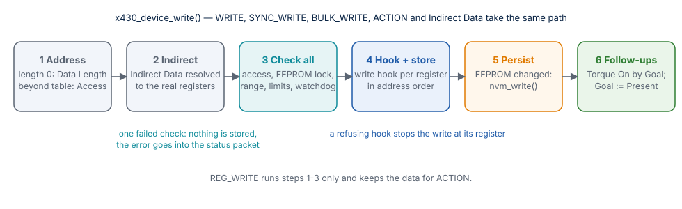
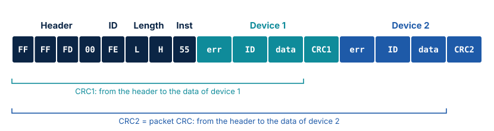
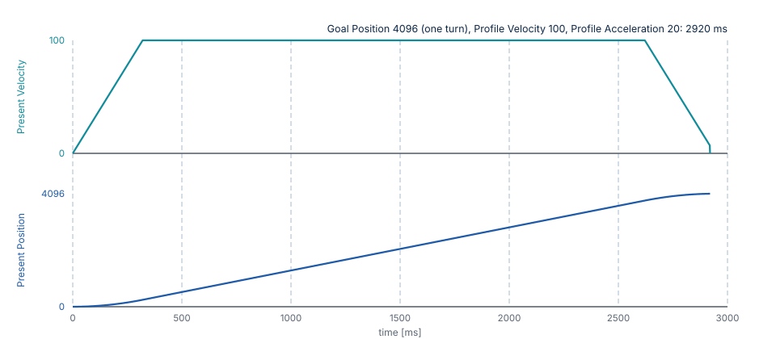

X430 Emulation¶
This chapter describes what a host sees: the Control Table model, how each instruction is
executed, the rules a real X430 enforces and how the library reproduces them, the format
of the persistent blocks, and the kinematic model of the simulator with its equations.
Every rule is taken from the code (src/) and checked by the unit tests in tests/unit/;
the measured results come from tests/unit/gtest_x430_sim.cpp and from the DynamixelSDK
check in tests/sdk/.
The Control Table model¶
models/x430_family.yaml holds the Control Table shared by the X430 family (662
addresses, two Indirect Address blocks of 28 entries) with two variants:
| Variant | Models | Current registers | Operating modes |
|---|---|---|---|
current |
XM430, XH430, XD430, XW430 | Current Limit (38), Goal Current (102), Present Current (126) | 0, 1, 3, 4, 5, 16 |
load |
XL430, XC430, 2XL430, 2XC430 | Present Load (126) only | 1, 3, 4, 16 |
models/x430/<model>.yaml lists what differs: Model Number, variant, removed registers
(LED on the XW430) and initial values or ranges. tools/x430_gen_model.py merges both,
validates the result (sizes, overlaps, EEPROM below address 64, a check for every writable
register) and writes x430_model_table.c with the register list and an address map (one
byte per address: register index + 1, 0 = reserved).
Every register has a write check:
| Check | Valid values | Registers (examples) |
|---|---|---|
| range | min..max | ID (0..252), Return Delay Time (0..254), limits |
| mask | only the bits of a mask | Drive Mode (bits 0, 2, 3), Shutdown |
| opmode | an operating mode of the model | Operating Mode (11) |
| symmetric | −limit..+limit, the limit is another register | Goal PWM (±36), Goal Current (±38), Goal Velocity (±44) |
| goal position | Min..Max Position Limit (52, 48) in mode 3; ±1,048,575 in the other modes | Goal Position (116) |
| indirect | RAM address 64..661 | Indirect Address 1–56 |
tests/models compares every model with a snapshot of the e-Manual control tables (size,
access, area, initial value and range of every register). Differences are allowed only
where the emulator deviates on purpose:
| Item | e-Manual | Emulator | Why |
|---|---|---|---|
| Protocol Type (13) | 1–2 | 2 only | Only Protocol 2.0 is emulated |
| Protocol Type initial on XW | 1 | 2 | Same; the XW description names 2 as the default |
| Secondary ID (12) range | 0–252 | 0–255 | 253–255 disable the function (as described) |
| Bus Watchdog (98) range | 1–127 | 0–127 | 0 disables and clears the error (as described) |
| XW430-T200 Model Number | 1,270 | 1,280 | The table repeats the number of the XW430-T333; ROBOTIS tools use 1,280 |
| ID write that collides with another emulated device | accepted | Data Range Error | Two local devices with one ID would answer together |
| Partial write of a multi-byte register | – | bytes are merged | Not specified; the whole new value is checked |
Addressing and status packets¶
- A packet to an ID is executed by the device with that ID; only it answers.
- Devices whose Secondary ID (12) equals the packet ID execute it silently; they refuse EEPROM writes and FACTORY_RESET. Values 253–255 disable the Secondary ID.
- Broadcast (0xFE): PING is answered by every device in ascending ID order; WRITE, REG_WRITE, ACTION, REBOOT, CLEAR, BACKUP and FACTORY_RESET (not option 0xFF) are executed silently; READ is ignored.
- Status packets of other devices on the line are ignored.
- Status Return Level (68): 0 = PING only, 1 = PING and READ (also the group reads), 2 = all. The level written by an instruction already applies to its own answer.
- Return Delay Time (9) × 2 µs is waited through
x430_port::delay_usbefore each answer. - The alert bit (0x80) is set in the error byte of every status while Hardware Error Status (70) is not 0.
- REBOOT and FACTORY_RESET answer first, then act. After an ID change the answer still comes from the old ID.
Writes¶

- A length of 0 is a Data Length Error; a range beyond the table an Access Error.
- Bytes written through Indirect Data are resolved to the addresses they point at.
- Every register the write touches is checked with its new value (the bytes of the write merged into the current bytes). Errors: Access (read-only, EEPROM while the torque is on, EEPROM through the Secondary ID), Data Range (value, limit registers, a goal while a Bus Watchdog error is active), Result Fail (Torque Enable after a shutdown). If one check fails, nothing is stored.
- In address order the write hook is called for each register; it may refuse, which stops the write at that register. Accepted registers are stored.
- If an EEPROM register changed, the EEPROM area is stored through
nvm_write; a failure is reported as Result Fail. - Drive Mode bit 3: a goal written with the torque off switches the torque on (through the write hook). Torque Enable 0 → 1 copies Present Position into Goal Position.
Reserved addresses read as 0 and ignore writes. REG_WRITE runs steps 1–3, keeps up to
X430_REG_WRITE_SIZE bytes and sets Registered Instruction (69); ACTION runs the whole
write. A Baud Rate change raises X430_EVENT_BAUD_RATE after the status packet, so the
answer still leaves at the old rate.
Indirect Address and Data¶
Indirect Address 1–28 (168–222) map Indirect Data 1–28 (224–251), and 29–56 (578–632) map
634–661. An Indirect Data byte behaves like the byte it points at (size, range and access
are those of the target register); a byte that points at Indirect Data itself is plain
storage. ROS 2 dynamixel_hardware_interface uses this to read Present Position and
Present Velocity with one Fast Sync Read; the DynamixelSDK check does the same.
Lifecycle¶
| Situation | EEPROM area (0–63) | RAM area (64–661) |
|---|---|---|
x430_device_init() |
Factory values, then the stored block | Factory values, then the Startup Configuration |
| REBOOT | Kept | Factory values, then the Startup Configuration; errors cleared |
| FACTORY_RESET 0xFF / 0x01 / 0x02 | Factory values (keep the ID / keep ID and Baud Rate) | As REBOOT |
| BACKUP 0x01 | – | Whole table stored, Backup Ready (147) = 1 |
| BACKUP 0x02 (torque off) | Restored except ID, Baud Rate, Protocol Type | Restored except Torque Enable, Bus Watchdog |
Startup Configuration (60): bit 1 restores the RAM area from a valid backup, bit 0
switches the torque on (through the write hook). FACTORY_RESET 0xFF gives the device its
factory ID from x430_device_config::id — or the model default 1 when that ID is used by
another device of the bus.
Bus Watchdog¶
With Torque Enable = 1 and Bus Watchdog (98) = 1..127, the device expects an instruction
packet at least every \(T_{\mathrm{wd}} = 20\,\mathrm{ms} \times\) Bus Watchdog. The time
since the last instruction packet is compared in x430_bus_poll() and on the next packet;
when it is exceeded, Bus Watchdog reads 0xFF (−1), the event X430_EVENT_BUS_WATCHDOG
fires and the goal registers answer Data Range Error until Bus Watchdog is written again.
The resolution is the period of x430_bus_poll().
CLEAR¶
Option 0x01 with the magic bytes 44 58 4C 22 clears the multi-turn information of Present
Position. It is refused with Result Fail while Moving (122) is 1. The event hook does the
work (the simulator moves its shaft); without an event hook the library wraps Present
Position into 0..4095.
Group instructions¶
- SYNC_READ / BULK_READ: one status packet per hosted device, in the order of the request, taking turns like X series actuators on one wire (below).
- FAST_SYNC_READ / FAST_BULK_READ: one status packet with ID 0xFE. Per device it
carries
[error, ID, data, CRC]; each CRC covers the packet from the header up to that point, and the last one is the packet CRC. The packet is not byte-stuffed, as DynamixelSDK expects. If the request lists an ID that this bus does not host, the bus stays silent (below).

- SYNC_WRITE / BULK_WRITE: applied to the hosted IDs without status; a malformed BULK_WRITE is ignored as a whole.
Several buses on one wire¶
A product may put one emulator bus on each MCU and connect the MCUs to one half-duplex wire, together with real actuators: each bus then hosts only some of the IDs of a request. Every bus hears the status packets of the others (the bus decodes them; it never answers one).
- SYNC_READ / BULK_READ take turns. The device listed first answers at once. Every later hosted device answers only after the status packet of the ID listed just before it: at once after a device of the same bus, else when the status of that ID has been received from the wire. So the answers never overlap, as on a bus of X series actuators.
- A missing device ends the read. If the status of the ID before does not arrive
within
X430_TURN_TIMEOUT_MS(default 100 ms) of the last progress of the read, or the host sends its next instruction first, the remaining hosted devices of the read stay silent. DynamixelSDK stops at the first ID that does not answer anyway, and a late answer could collide with the next instruction. A hosted device that does not answer reads (Status Return Level 0) ends the read the same way. The timeout uses the millisecond clock of the port; keep it longer than one status packet at the lowest baud rate in use plus the Return Delay Time. - A Fast read of several buses is not answered. The answer to FAST_SYNC_READ and FAST_BULK_READ is one packet whose segments come from all devices, chained by a running CRC; a bus cannot build the part of another one. When the request lists an ID that this bus does not host, it stays silent, and the ROBOTIS ROS 2 hardware interface falls back to SYNC_READ after 10 attempts. With all IDs on one bus nothing changes: keep all IDs of one ROS 2 hardware component on the same emulator bus to use the Fast read.
Persistent blocks¶
The library hands the application opaque blocks; their layout is fixed so that a block of another model or a damaged flash page is detected:
| Offset | Size | Content |
|---|---|---|
| 0 | 4 | Magic X430 |
| 4 | 2 | Model Number (little endian) |
| 6 | 1 | Format version (1) |
| 7 | 1 | Slot: 0 EEPROM area, 1 backup |
| 8 | 2 | Payload size: 64 (EEPROM area) or 316 (the compact image of the device) |
| 10 | n | Payload: the first n bytes of the compact image (the table bytes 0..63 for the EEPROM area) |
| 10 + n | 2 | CRC-16 of DYNAMIXEL Protocol 2.0 (polynomial 0x8005) over bytes 0..9+n |
A block with any field that does not match is ignored: the device keeps its factory
values. The EEPROM block is 76 bytes (X430_NVM_EEPROM_SIZE), the backup 328 bytes
(X430_NVM_BACKUP_SIZE).
The compact image is the Control Table a device keeps in RAM without its long reserved runs: for every X430 model the addresses 0–147, 168–251 (Indirect Address 1–28 and Indirect Data 1–28) and 578–661 (Indirect Address 29–56 and Indirect Data 29–56), 316 of 662 bytes. The generator writes these segments into the model table; the reserved bytes left out read 0 like every other reserved address.
The simulator¶
The simulator replaces the motor with a kinematic model that follows the X430 profiles. It works in integer units: the shaft position \(s\) in 1/1000 pulse (4,096 pulses per turn) and the shaft velocity \(v\) in 1/1000 pulse per second, advanced in steps of \(\Delta t\) = 1 ms. The register units convert as
Position modes (3, 4, 5)¶
With \(g\) the Goal Position on the shaft (\((\text{Goal Position} - \text{Homing Offset}) \times\) direction \(\times 1000\)), \(V\) the profile speed (Profile Velocity \(\times u_v\), or Velocity Limit \(\times u_v\) when Profile Velocity is 0) and \(A\) = Profile Acceleration \(\times u_a\), each step \(k\) computes
where \(1000\,d_k\) is the speed that arrives within one step, the square root the fastest speed that can still brake to standstill at the goal, and \(\lfloor\cdot\rceil_0\) a division truncated toward zero. With \(A = 0\) the velocity jumps to its target. When the remaining distance is not larger than the step (or below half a pulse) the shaft is placed on the goal and \(v = 0\). The square root is an integer square root (at most 32 iterations). Drive Mode bit 2 (time-based profile) is treated like the velocity-based profile.

The curve is computed by tools/docs/diagrams.py with the same integer arithmetic.
Velocity, PWM and current modes (1, 16, 0)¶
The target velocity is Goal Velocity \(\times u_v\) (mode 1), Goal PWM / PWM Limit \(\times\) Velocity Limit \(\times u_v\) (mode 16) or Goal Current / Current Limit \(\times\) Velocity Limit \(\times u_v\) (mode 0), limited to ±Velocity Limit \(\times u_v\) and ramped with \(A\) as above; the shaft advances by \(\lfloor v/1000 \rceil_0\) per step. With the torque off the velocity is 0 and the shaft holds its position.
Live registers¶
After the steps of x430_sim_step() the simulator writes
| Register | Value |
|---|---|
| Present Position (132) | \(\mathrm{round}(s/1000) \times\) direction + Homing Offset |
| Present Velocity (128) | \(\mathrm{round}(v \times \text{direction} / u_v)\) |
| Present Current / Load (126) | Velocity change of the last step in \(u_v\), limited to Current Limit (or ±1000 for Present Load) — a rough stand-in for the effort |
| Present PWM (124) | Present Velocity / Velocity Limit \(\times\) 885 |
| Moving (122), Moving Status (123) | 1 and Profile Ongoing while the shaft turns or a Goal Position move is not done; In-Position, profile type (step, rectangular, triangular, trapezoidal) |
| Velocity / Position Trajectory (136 / 140) | The target velocity; Goal Position in the position modes |
| Present Input Voltage (144), Present Temperature (146) | From struct x430_sim_config |
Direction is −1 with Drive Mode bit 0 (reverse), +1 otherwise.
Measured¶
| Scenario (test) | Simulator | Closed form | Difference |
|---|---|---|---|
Move of 4,096 pulses, Profile Velocity 100, Profile Acceleration 20 (TrapezoidalMoveTimeMatchesTheClosedForm), \(T = d/v + v/a\) |
2,920 ms | 2,940.3 ms | −0.69 % |
Velocity ramp 0 → 100, Profile Acceleration 5 (VelocityRampTimeMatchesTheClosedForm), \(t = v/a\) |
1,275 ms | 1,280.7 ms | −0.45 % |
The peak Present Velocity of the move is exactly the Profile Velocity (100). The move ends slightly early because the last steps place the shaft on the goal as soon as it is closer than one step. The tests accept ±1 %.
Limits of the emulation¶
- Motion, current control and PID gains belong to the motor: the library stores the gains and limits, the application applies them.
- Present Input Voltage and Present Temperature are not compared with their limits by the library: the application raises the hardware error.
- Only Protocol 2.0; Protocol Type accepts 2 only.
- One model per build; all devices of a build emulate the same model.